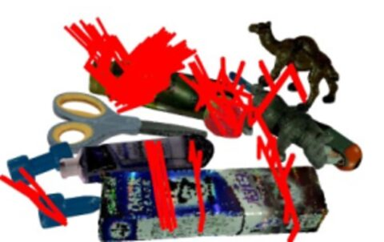
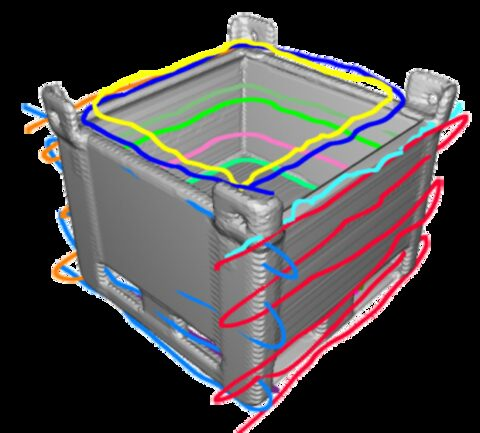
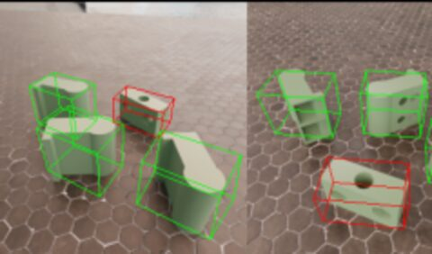
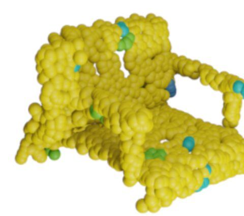

MultiGraspNet: A Multitask 3D Vision Model for Multi-Gripper Robotic Grasping
S. Ortuno Chanelo, P. Rabino, E. Civitelli, T. Tommasi, R. Camoriano
IEEE Robotics and Automation Letters (RA-L), 2026
One point-cloud model predicts parallel-jaw and vacuum grasps from a shared representation, raising grasp success in real industrial trials.

FoldPath: End-to-End Object-Centric Motion Generation via Modulated Implicit Paths
P. Rabino, G. Tiboni, T. Tommasi
IEEE/RSJ International Conference on Intelligent Robots and Systems (IROS), 2025
The first end-to-end model that generates multiple long-horizon robot paths as continuous neural fields, with no post-processing. State of the art on robotic spray painting; patent pending.

Efficient Odd-One-Out Anomaly Detection
S. Chito, P. Rabino, T. Tommasi
International Conference on Image Analysis and Processing (ICIAP), 2025
Finds the anomalous object in a multi-view scene with about a third fewer parameters and roughly 3× faster training than the previous state of the art.

3D Semantic Novelty Detection via Large-Scale Pre-Trained Models
P. Rabino, A. Alliegro, T. Tommasi
IEEE Access, vol. 12, 2024
3D-SeND tells known from unknown objects using frozen pre-trained 3D encoders, with no training and only a few reference samples per class. An earlier version appeared at the ECCV 2024 workshops.
QuadricViT: Efficient 3D Semantic Occupancy Prediction
S. Chito*, P. Rabino*, R. Camoriano, T. Tommasi (*equal contribution)
Under submission, 2026
Robotic Path Generator from Point Clouds (Metodo per imparare la generazione del percorso motorio di robot)
P. Rabino, G. Tiboni, T. Tommasi
National and international patent application, Politecnico di Torino, 2025